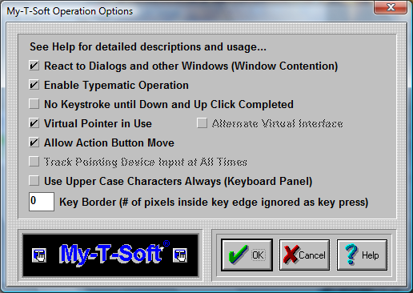

| My-T-Soft®: for Windows; Indestructible Keyboards and Indispensable Utilities; Version 1.80; User's Guide | ||
|---|---|---|
| Prev | Next | |

IMPORTANT NOTE: There are various settings here to change how My-T-Soft operates. If you are having problems typing, see Interface Settings.
React to Dialogs and other Windows (Window Contention)
This is a global setting for My-T-Soft that will change the internal operation of the software. If set On, My-T-Soft will move off of dialogs, and react to other Windows based on Special and Macro Panel settings. If set Off, this sensing & reacting to other windows in the system will be disabled. For certain types of use, having My-T-Soft remain in a particular screen location at all times and not affecting other windows in the system is preferred.
IMPORTANT NOTE: My-T-Soft's automatic sensing for Special & Macro Panel options will NOT operate if this is set Off.
Enable Typematic Operation
The automatic typing of a character while a particular key is pressed down for a period of time requires that Enable Typematic Operation be set On. If set Off, this automatic typing operation is disabled. Specific settings for Typematic operation can be found in the MYTSOFT.INI initialization file. See Advanced User Information for more details.
No Keystroke until Down and Up Click Completed
My-T-Soft reacts like a physical keyboard, and a Click then Drag motion off of a particular key results in the down and subsequent release of that key, resulting in a keystroke being generated. To disable this default action, set the option On. Setting this option On is preferred by users who do not have precise control over the positioning of the mouse pointer while a click occurs. When set On, Typematic Operation is automatically set Off to disable multiple keystrokes of the same key. This the forces the pointing device to complete the Down & Up Click to generate the keystroke initially selected by the Down click.
Virtual Pointer in Use
This setting should be set On if a the device used to move the mouse cursor (pointer) is not a standard mouse, or trackball. Any hardware device that interacts via a "device driver" with Windows should not be considered a Virtual Pointer (unless the implementation does not fully emulate a standard mouse [which is more common than otherwise]). Various Assistive Technology devices such as cameras or lasers that track the eye, other biometric sensors, or other software based translation interfaces (such as the MouseKeys in Microsoft's Accessibilities options) when used should have the Virtual Pointer setting On. This feature forces My-T-Soft to operate slightly differently for "Clicks" (button down, button up), and during moving the My-T-Soft window.
Alternate Virtual Interface
This setting should be set on ONLY when there are typing difficulties AND the pointing device does not activate the down/up display of My-T-Soft buttons. This setting may be required for software interfaces, and other non-physical approaches to operating the mouse cursor and generating clicks. Older versions of "Joystick-To-Mouse" will require this to be set On.
Allow Action Button Move
The setting is default On, and it allows the Action button (as set in My-T-Soft Setup, Mouse Buttons, Action button) to move the My-T-Soft window by clicking on the frame or any unused area (Click, drag, then release). If the mouse cursor is not always tracked accurately, it is recommended that this be set to Off to prevent accidental moves. This may also be set off to prevent the operator from moving the My-T-Soft window (note that the second and/or third button must be configured properly to ensure the move option is unavailable).
Note: This option will be automatically disabled if the Key Border is a non-0 value. If you want this option enabled, be sure to check the Key Border setting.
Windows 2000/XP/Vista/7 (This setting does not apply, and is disabled)
Track Pointing Device Input at all times
This setting is default Off, unless Setup senses a known driver or interface that requires this setting On. If there are any focus problems (i.e. typing [clicking] on My-T-Soft does not type [send keystrokes] into the currently active window), then this setting should be set On to see if it resolves this problem. In general, this setting should be Off if at all possible. See Advanced User Notes for more information on this setting and how it affects My-T-Soft operation.
Use Upper Case Characters Always (Keyboard Panel)
By default, lower case characters are displayed on the Keyboard (Alpha) panel, unless the Shift or Caps lock is engaged. Check this option On to force Upper Case display at all times.
Key Border (# of pixels inside key edge ignored as key press)
This setting is used to reduce the area of each key that can register a press. For maximum effect, the default setting is no border area. As the Key Border values increase, the pixels inside each edge (top, left, bottom, right) are removed from the area of the key that will react to a click. Because of the differing sizes of the panels and keys, this setting may affect certain size ranges differently. It is recommended that the particular size for usage be selected first, and then the desired Key Border be set to match the current size.
Note: My-T-Soft automatically sets the "Allow Action Button Move" to Off when there is a border in use (greater than 0). This prevents the undesirable move when clicks & releases are not accurate due to either software driver or operating conditions.